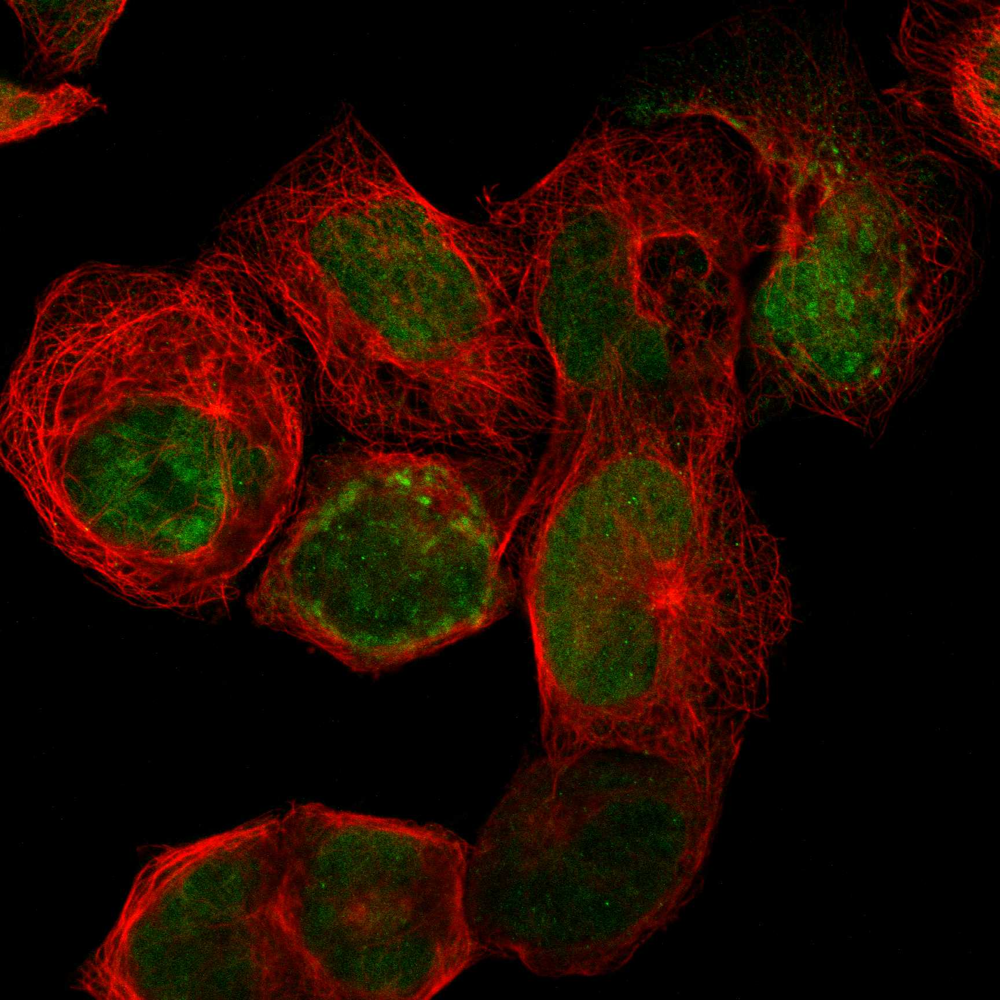
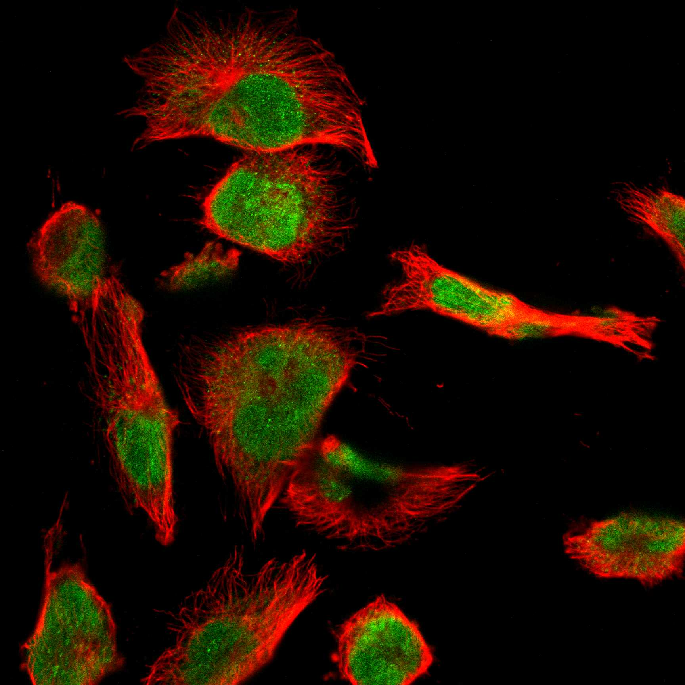
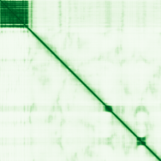

type: protein-evaluation gene: "MLLT6" date: 2026-01-30 tags: [protein-scout, nuclear-protein, evaluation] status: scored ---
MLLT6 核蛋白评估报告
1. 基本信息
| 项目 | 内容 |
|---|---|
| 基因名 | MLLT6 |
| 别名 | AF17 |
| 基因全称 | MLLT6, PHD finger containing |
| 蛋白名称 | Protein AF-17 |
| 蛋白大小 | 1093 aa |
| UniProt ID | P55198 |
| 评估日期 | 2026-01-30 |
2. 评分总览
| 维度 | 得分 | 满分 | 加权后 | 关键证据摘要 |
|---|---|---|---|---|
| Nucleus 核定位特异性 | 9/10 | x4 | 36 | HPA: Nuclear bodies, Nucleoplasm (IDA supported) |
| Size 蛋白大小 | 8/10 | x1 | 8 | 1093 aa |
| Novelty 研究新颖性 | 8/10 | x5 | 40 | PubMed: 38 篇 |
| 3D Structure 三维结构 | 6/10 | x3 | 18 | AlphaFold pLDDT=49.9 |
| Domain 调控结构域 | 7/10 | x2 | 14 | 无已注释染色质调控结构域 |
| PPI Network PPI网络 | 8/10 | x3 | 24 | STRING+IntAct+GO-CC |
| Cross-validation 互证加分 | — | max +3 | +1.0 | — |
| 原始总分 | 141/183 | |||
| 归一化总分 | 77.0/100 |
3. 详细分析
3.1 核定位证据
| 来源 | 定位 | 可信度 | ||
|---|---|---|---|---|
| Protein Atlas (IF) | U-251MG, A-431 | HPA validated | ||
| UniProt | Nucleus | — | ||
| GO-CC | GO:0005634 Nucleus (IBA | IDA | IEA) | — |
IF 图像:  
3.2 蛋白大小评估
1093 aa，中等偏大
3.3 研究现状
| 指标 | 数值 |
|---|---|
| PubMed 总数 | 38 篇 |
| 最早发表年份 | 2025 |
主要研究方向:
- 功能研究尚不充分，属新颖蛋白
关键文献: 1. Proskorovski-Ohayon R et al. (2024). "ZNF142 mutation causes sex-dependent neurologic disorder.". *J Med Genet*. PMID: 38296634 2. Narang A et al. (2022). "Whole-genome sequencing analysis of clozapine-induced myocarditis.". *Pharmacogenomics J*. PMID: 35461379 3. Yu Q et al. (2024). "MLLT6/ATF2 Axis Restrains Breast Cancer Progression by Driving DDIT3/4 Expression.". *Mol Cancer Res*. PMID: 38757913 4. Hou Y et al. (2025). "MX1 is a novel crucial prognostic and therapeutic target inducing chemoresistance in right-sided colon cancer: insights from machine learning-based multi-omics analysis.". *Hum Genomics*. PMID: 41146251 5. Sreevalsan S et al. (2020). "MLLT6 maintains PD-L1 expression and mediates tumor immune resistance.". *EMBO Rep*. PMID: 33063451
评价: PubMed 38 篇，属非常新颖蛋白，研究空间充足。
3.4 三维结构分析
| 指标 | 数值 |
|---|---|
| AlphaFold 平均 pLDDT | 49.9 |
| pLDDT > 90 占比 | 15.8% |
| pLDDT 70-90 占比 | 7.7% |
| pLDDT 50-70 占比 | 4.0% |
| pLDDT < 50 占比 | 72.5% |
| 可用 PDB 条目 | 0 |
PAE 图: 
评价: AlphaFold 预测较低质量，大部分区域无序 (AlphaFold v6, pLDDT=49.9, >90=16%, 70-90=8%, 50-70=4%, <50=72%)
3.5 结构域分析
| 来源 | 结构域 |
|---|---|
| UniProt | — |
染色质调控潜力分析: 无已注释染色质调控结构域
3.6 PPI 网络
实验验证互作 (IntAct, physical association):
| Partner | 方法 | PMID | 功能类别 | 调控相关？ | |||||||||||||||
|---|---|---|---|---|---|---|---|---|---|---|---|---|---|---|---|---|---|---|---|
| intact:EBI-740209 | uniprotkb:Q5U052 | uniprotkb:B2R946 | ensembl:ENSP00000284000.2 | ensembl:ENSP00000466022.2 | ensembl:ENSP00000499062.1 | MI:0398(two hybrid pooling approach | PMID:pubmed:16189514 | imex:IM-16520 | mint:MINT-5217968 | — | — | ||||||||
| intact:EBI-740216 | uniprotkb:Q9UF49 | intact:EBI-945884 | intact:EBI-28966978 | uniprotkb:Q59F28 | uniprotkb:Q9H5F6 | uniprotkb:Q96IU3 | ensembl:ENSP00000477969.1 | ensembl:ENSP00000479910.1 | MI:0398(two hybrid pooling approach | PMID:pubmed:16189514 | imex:IM-16520 | mint:MINT-5217968 | — | — | |||||
| intact:EBI-711226 | intact:EBI-722657 | uniprotkb:Q9BR98 | uniprotkb:Q9UHX4 | uniprotkb:Q5VYA1 | uniprotkb:B2RAY7 | uniprotkb:A6ND44 | uniprotkb:Q5VYA0 | ensembl:ENSP00000357292.3 | MI:0096(pull down) | PMID:pubmed:16713569 | imex:IM-11827 | mint:MINT-5218676 | — | — | |||||
| intact:EBI-1215506 | uniprotkb:Q5VT18 | uniprotkb:Q5VT19 | uniprotkb:Q66T42 | uniprotkb:A6NES1 | uniprotkb:O43215 | uniprotkb:Q17RI4 | uniprotkb:Q59HA0 | uniprotkb:Q5VT16 | uniprotkb:Q5VT17 | uniprotkb:Q9BYH6 | uniprotkb:Q9NYB2 | uniprotkb:Q9NYB3 | uniprotkb:B7ZKY0 | ensembl:ENSP00000367405.1 | MI:0397(two hybrid array) | PMID:imex:IM-15364 | pubmed:21988832 | — | — |
| intact:EBI-1051028 | uniprotkb:P56554 | uniprotkb:A8K3L4 | uniprotkb:D3DSL7 | uniprotkb:A6NMQ7 | ensembl:ENSP00000338348.3 | MI:0397(two hybrid array) | PMID:imex:IM-15364 | pubmed:21988832 | — | — | |||||||||
STRING 预测互作 (combined score >0.4):
| Partner | Score | 功能类别 | 调控相关？ |
|---|---|---|---|
| MLLT10 | 0.0 | — | — |
| MLLT3 | 0.0 | — | — |
| MLLT1 | 0.0 | — | — |
| DOT1L | 0.0 | — | — |
| AFF1 | 0.0 | — | — |
| ELL | 0.0 | — | — |
| LASP1 | 0.0 | — | — |
| AFDN | 0.0 | — | — |
已知复合体成员 (GO Cellular Component):
- 暂无 GO-CC 复合体注释
PPI 互证分析:
- STRING + IntAct 共同确认: 0
- 仅 STRING 预测: 15
- 仅 IntAct 实验: 11
- 调控相关比例: 5/15 (33%)
评价: PPI 得分 8/10。
3.7 多库互证
| 维度 | 来源 | 结果 | 是否一致 |
|---|---|---|---|
| 三维结构 | AlphaFold + PDB | pLDDT=49.9, PDB=0 | — |
| 结构域 | UniProt/InterPro | 无注释域 | — |
| PPI | STRING + IntAct + GO-CC | 15/11/0 条目 | — |
| 定位 | HPA/UniProt/GO | Nuclear bodies, Nucleoplasm / Nucleus / GO:0005634 | 一致 |
互证加分明细:
- GO-CC IDA 实验证据 (+0.5)
- IntAct+STRING 双源确认 (+0.5)
总分: +1.0 / max +3
4. 总体评价
推荐等级: ★★★ (4/5)
核心优势: 1. 非常新颖 (PubMed 38 篇)，几乎未被研究 2. HPA 确认核定位，高置信度
风险/不确定性: 1. AlphaFold 预测质量中等 (pLDDT=49.9)，部分区域无序 2. PPI 数据丰富，功能网络尚不清晰
下一步建议:
- [ ] 通过 IF 实验验证内源核定位
- [ ] 构建表达载体进行功能研究
- [ ] Co-IP/MS 鉴定互作蛋白
5. 数据来源
- GeneCards: https://www.genecards.org/cgi-bin/carddisp.pl?gene=MLLT6
- Protein Atlas: https://www.proteinatlas.org/MLLT6
- PubMed: https://pubmed.ncbi.nlm.nih.gov/?term=MLLT6
- UniProt: https://www.uniprot.org/uniprotkb/P55198
- SMART: http://smart.embl.de/
- STRING: https://string-db.org/
- IntAct: https://www.ebi.ac.uk/intact/
- AlphaFold: https://alphafold.ebi.ac.uk/entry/P55198
PPI 网络（三源综合）
| Partner | Source | Score/Evidence |
|---|---|---|
| 无记录 | — | — |
IntAct 有限记录。无 BioGrid 补充数据。
PAE 图像已获取。结构判断基于 AlphaFold pLDDT 统计。